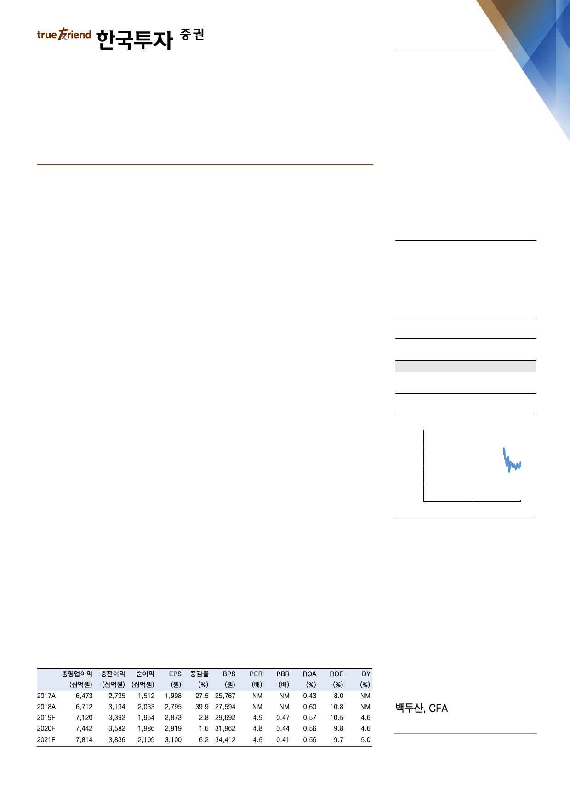

기업 Note
2019. 6. 24
우리금융지주(316140)
우리카드와 우리종금 문제 일단락
매수(유지)
목표주가: 20,000원(유지)
6% 희석 내에서 카드와 종금이 자회사로 이동
지주 손자회사였던 우리카드와 우리종금이 지주의 자회사가 된다. 올해 초 지주
전환할 때 카드와 종금을 은행 자회사로 남겼던 것은 당시 지주 자회사로 바로 전
환할 경우 주식이전에 따라 14% 희석이 발생할 수도 있었기 때문이다(18/6/20,
‘주주이익에 가장 부합하는 방향으로 지주사 전환’ 참고). 이번에는 지주 전환 이
후의 지분이동 과정이기 때문에 좀 더 유연함을 발휘할 수 있었고, 결론적으로
6.2% 희석에 그치는 선에서 카드와 종금을 지주 자회사로 만들 수 있게 됐다.
우리카드는 50% 주식교환, 50% 현금매수
은행이 100% 보유한 카드 지분은 50%는 주식교환을 통해, 나머지 50%는 현금
매수를 통해 우리금융에게 넘어간다. 교환비율은 ‘1 대 0.47’로 당초 예상했던 비
율 ‘1 대 0.44’에서 크게 벗어나지 않았다. 이에 따라 4,210만주의 지주 신주가
발행되고, 자회사가 지주 주식을 보유하는 것이기 때문에, 9월 기준일을 기준으로
6개월 내에 해당 주식을 처분할 예정이다. 자문사 선임 후 국내외 다수의 전략적,
재무적 투자자를 알아볼 예정인데 현재부터 약 9개월간의 시간이 있고, 외국인 지
분율이 타행 대비 낮아 투자자 모집에는 큰 어려움이 없을 전망이다.
우리종금은 대주주 보유분에 대해서 현금매수
우리금융은 은행이 보유 중이던 종금 지분 59.8%를 3,928억원을 주고 양수한다.
주당가액이 974원으로 시가보다 높은 이유는 취득가액은 상증법상 최종 시세가액
의 130%를 적용해 산출해야 하기 때문이다. 소액주주 지분 처리에 대해서는 우리
금융 내부등급법이 승인되는 내년 이후에 다양한 방안을 모색할 수 있을 것이다.
Stock Data
KOSPI(6/21)
주가(6/21)
시가총액(십억원)
발행주식수(백만)
52주 최고/최저가(원)
일평균거래대금(6개월, 백만원)
유동주식비율/외국인지분율(%)
주요주주(%) 예금보험공사
국민연금
2,126
14,000
9,522
680
16,000/13,350
21,593
74.4/30.4
18.3
8.4
주가상승률
절대주가(%)
KOSPI 대비(%p)
1개월
1.1
(2.0)
6개월
-
-
12개월
-
-
주가추이
(원)
18,000
16,000
14,000
12,000
10,000
Jun-17
자료: FnGuide
Jun-18
Jun-19
피할 수 없던 악재 마무리
언론을 통해 수 차례 보도됐던 방식 그대로 카드와 종금을 자회사로 이전했고, 주
주가치 희석 우려가 이미 주가에 선반영된 점, 한진중공업 충당금 환입, 롯데카드
지분인수 등으로 올해 호실적이 예상되는 점을 고려하면 금번 지분 이동이 우리금
융 주가에 미치는 악영향은 제한적이다.
doosan@truefriend.com